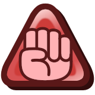

Partner System
These are the rules I use for running Partners in the Campaigns that I run, be they Play-By-Post or otherwise.
To unlock Partners to fill out your Party, you have two options.
1) You can find an NPC somewhere in the world that you like, and convince them to join you on your adventure. This requires a Persuade (or Bully if you want to coerce them through fear instead) Check, requiring at least a Good! to succeed. For every Partner you already have, the required Grade of Success needed increases by one. Keep in mind, some Partners may be more difficult to unlock than others.
2) Build a character following the rules below, which then the GM can place that character somewhere in the world for you to find. This option will let you unlock a Partner without rolling a Skill Check, however, it's entirely up to the GM to let you find them in the first place. If they don't want you to have the Partner or you just never look in the right place, you just won't get the Partner.
When it comes to building Characters to use a Partner, it's very similar to building a Level 1 Player Character. The only difference is their starting HP, FP, BP, SP, the number of Negative Traits each Technique is allowed to benefit from, and their Inventory.
On top of this, their Level is referred to as a Rank and can only reach as high as Level 4, to most accurately match the Partners from the first two Paper Mario games (A fourth and fifth Rank being added to match the progression of Mushroom based Items in some of the games). Their Rank progression looks as follows:
Basic Rank
Known Techniques: 2
# of Negative Traits per Technique: 4
 Bonus to Basic Rank's Power: +0
Maximum HP based on perceived Role:
- DPS: 10
- Tank: 15
- Support: 10

Super Rank
# of Negative Traits per Technique: 5
Bonus to Basic Rank's Power: +1
- DPS: 15
- Tank: 25
- Support: 20

Ultra Rank
# of Negative Traits per Technique: 6
Bonus to Basic Rank's Power: +2
- DPS: 25
- Tank: 35
- Support: 30

Miracle Rank
# of Negative Traits per Technique: 7
Bonus to Basic Rank's Power: +3
- DPS: 35
- Tank: 45
- Support: 40
Max Rank
# of Negative Traits per Technique: 8
Bonus to Basic Rank's Power: +4
- DPS: 45
- Tank: 55
- Support: 50

Number of Techniques known
A Player Character can only have up to 4 Techniques through Leveling Up (2 at first Level, 3 at fifth, and 4 for any Level over 10). The same is true for Partners as well, except they gain a new one at each Rank instead, until they reach Miracle Rank.
# of Negative Traits per Technique
A Player Character can only save on FP Costs from a number of Negative Traits equal to 3 + (½ their Level). Since a Partner's effective Max Level is only 5, and them Ranking Up is much less common than a Player Character Leveling up, they get to save on FP Costs from a number of Negative Traits equal to 3 + (their Level).
Bonus to Basic Rank's Power
A Player Character gains a bonus to their Power as they Level Up (+1 at 5th Level, +2 at 10th, +3 at 15th Level, etc). The same is true for Partners as well, gaining +1 to their base Power whenever they Rank Up, no matter what that base Power initially was.
Maximum HP based on perceived Role
A Partner doesn't gain HP based on their Heart, instead they are assigned a role by the DM based on what their percieved functionality is. Their Maximum HP each Rank is based on this role, usually, but not always increasing by +10 HP each Rank. A DM may adjust these numbers, or even make new roles, as best befits the situation and Parnter at hand.
A Partner can only Rank Up by offering Shine Sprites, Power Stars, Power Moons, Super Blocks, or other similarly powerful Items to someone who can harness their power, like Shamans, Merlon being the prime example.
As for their FP, BP, and SP, they must use the Player Character's for whom they are the Partner of.
You can equip Badges to them using your BP, each Badge applying to the specific Partner it is equipped to, P versions of Badges applying to all your Partners instead.
Example: P Badges
You have two Partners named Tom and Jerry and 6/6 BP to spend on equiping Badges.
Normally you could use that BP to equip a Power Plus Badge to yourself, but when equipping the Badge, you could instead assign it to one of your Partners, and grant, let's say Jerry the +1 Power instead.
In this instance, only Jerry gets the +1 Power, you and Tom do not. If you had a Power Plus P Badge instead, when you equip it, you don't assign it at all. You are never elegible for the effects of a P Badge, instead, both Tom, Jerry, and any other Partners you might gain in the future, benefit from the +1 Power.
Similarly, Partners can have Gear equipped to them, and some may even come with Basic Gear tied to their [Tool] Techniques.
Such Gear is so generic and handwavey, it doesn't require Inventory Slots. However, if you wish to get them better Gear, or swap out their Gear entirely for something else, they do not have an Inventory of their own to hold such things, instead taking up space in the Inventory of the Player Character.
Due to this, they also cannot carry any Items, but can use Items from the Inventory of the Player Character they are the Partner of instead.
In regards to FP and SP, since they do not have FP and SP of their own, they can not restore either of these stats.
If an effect would restore the FP and/or SP of a Partner, but not the Player Character, the Player Character's FP and/or SP is restored instead. If an effect would restore the FP and/or SP of both the Partner and Player Character, the Player Character's FP and/or SP is, however, only restored once.
In addition to this, Partners can use the SP generated for Exceptional Results to improve the effect of their Technique being used instead of having it restore the Player Character's SP.
Finally, when being assisted in a Skill Check, you may only have one Partner assist you on any given Check, so it is better to gather a wider variety of Partners rather than building a coven of all high Magic users.